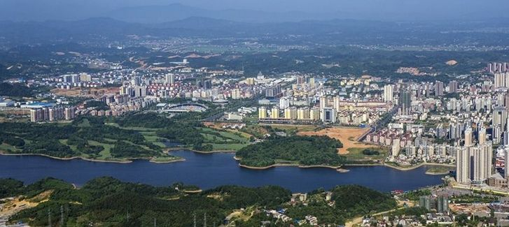

双峰隶属于湖南省娄底市，成立于1951年，以县境内有两座山峰相对耸立而得名。
双峰县东邻湘潭县、衡山县，南接衡阳县，西毗邵东县、涟源市，北界娄底市、湘乡市。东西宽61公里，
南北长59.2公里。面积1715.14平方公里，占全省总面积的0.81%。总人口95.8万人（2015年）。
双峰县辖13个镇、3个乡。县政府驻永丰镇。
双峰县属中亚热带季风气候，地势西高东低，丘陵、平原相间。
2015年，双峰县实现地区生产总值199.46亿元。
名胜古迹有黄巢山、仙神寨、永丰桥、曾国藩故居，蔡和森纪念馆等。
双峰历史悠久，名人辈出，享有“国藩故里，湘军摇篮，女杰之乡”之誉。
双峰县
外文名称
Shuangfeng
行政区类别
县
所属地区
中国湖南省娄底市
下辖地区
永丰镇、荷叶镇、杏子铺镇等
政府驻地
永丰镇
电话区号
0738
邮政区码
417700
地理位置
娄底市东南部35公里处
面积
1715.14平方公里
人口
95.8万人（2013年）
方言
湘语—双峰话
气候条件
亚热带季风性湿润气候气候
著名景点
曾国藩故居，蔡和森纪念馆等
机场娄底通用机场、长沙黄花国际机场
火车站
双峰北站、娄底南站、邵东站
车牌代码
湘K
31321